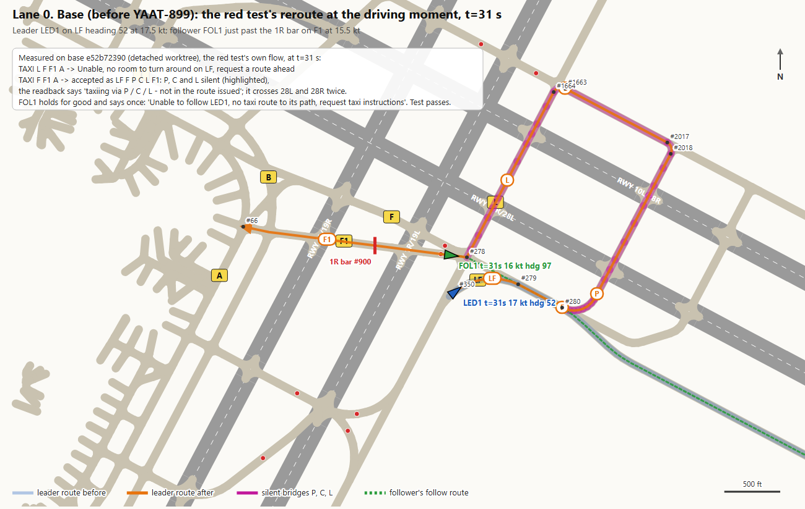
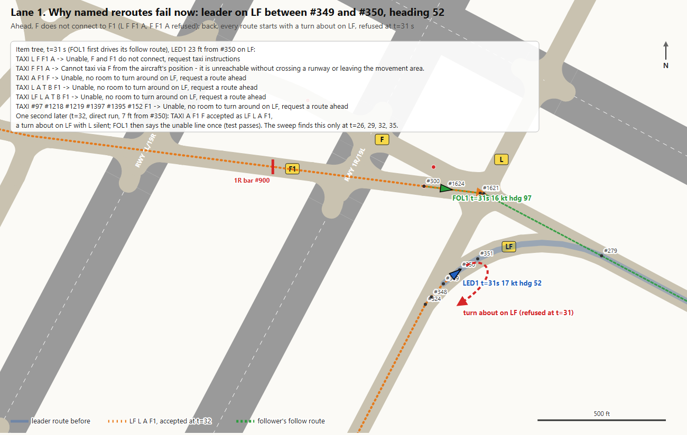
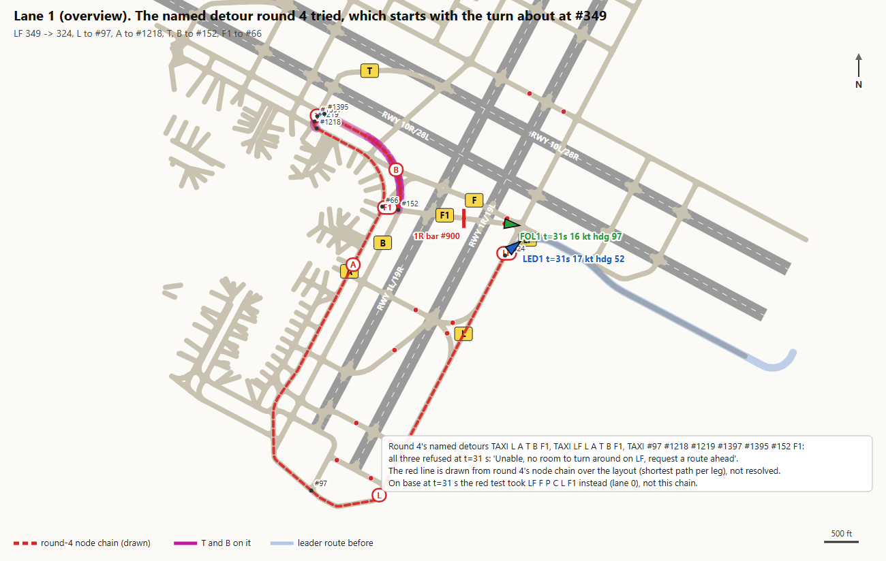
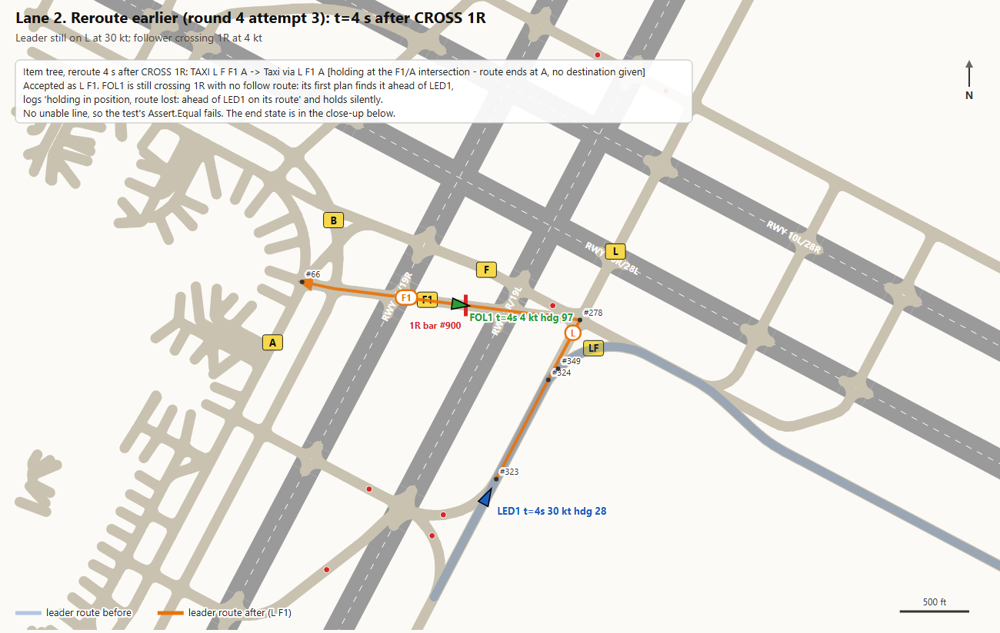
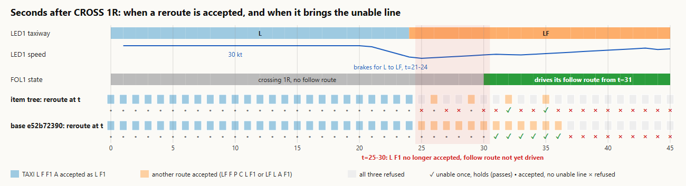
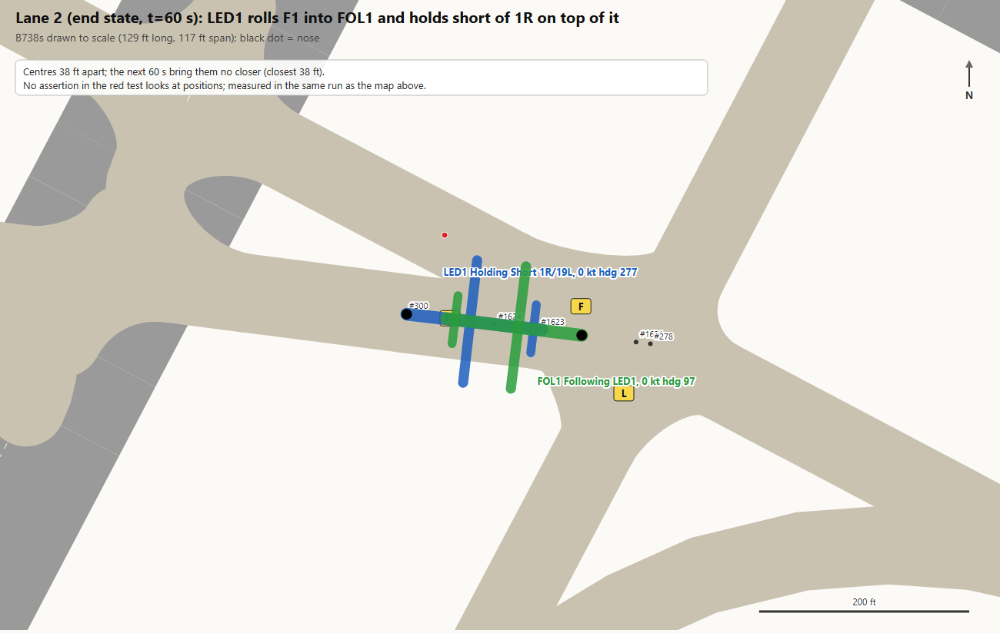
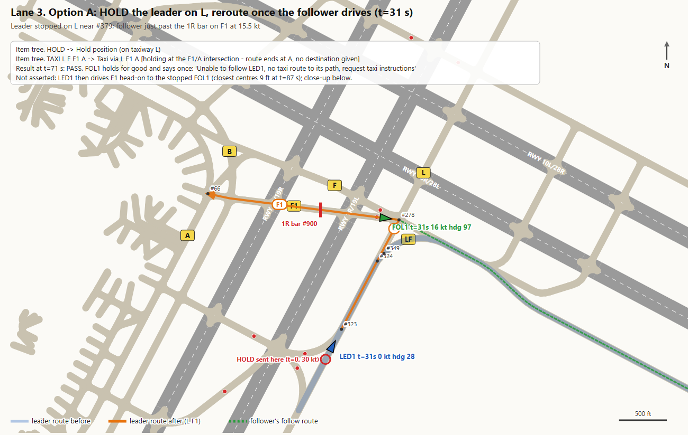
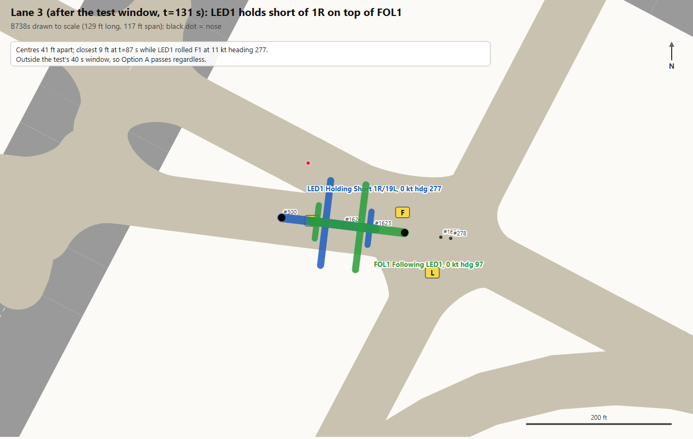

YAAT-899: how to re-stage the red follow reroute test
FollowGroundAtRunwayBarLeadTests.FollowingPastOneRight_LeaderReroutedThroughTheFollower_SaysUnableOnce. FOL1 holds at the 1R bar on F1 with FOLLOWG LED1, gets CROSS 1R. LED1 was cleared TAXI A L F 28L. Once FOL1 drives its follow route, LED1 is rerouted along F1 through FOL1. The test expects FOL1 to hold for good and say once: "Unable to follow LED1, no taxi route to its path, request taxi instructions". All times are seconds after CROSS 1R.
(1) On base e52b72390 at the driving moment (t=31),
TAXI L F F1 A is refused ("no room to turn around on LF"). The test passes on base through its second choice, TAXI F F1 A, accepted as LF F P C L F1: P, C and L are silent bridges, and the loop crosses 28L and 28R twice (lane 0). On base, none of the test's three reroutes resolved through T and B at any second from 0 to 45 (lane 2's sweep).
(2) In the item tree at t=31,
TAXI L F F1 A is refused with "F and F1 do not connect", and TAXI F F1 A with "Cannot taxi via F from the aircraft's position". Only TAXI A F1 F and the three named detours get "no room to turn around on LF" (lane 1).
| Option | Red test's assertions | What else the measurement shows |
|---|---|---|
Lane 3: Option A, HOLD LED1 on L, reroute when FOL1 drives | PASS unable said once, follow unjoinable | After the 40 s window LED1 drives F1 head-on into the stopped FOL1 and holds short of 1R on top of it (centres 41 ft apart). Lane 2 shows the same overlap. |
| Lane 1: reroute one second later (t=32) with the existing list | PASS at t=32 only | TAXI A F1 F is accepted as LF L A F1 (a turn about on LF, L silent) only at t=26, 29, 32 and 35. At the seconds between, it is refused for the same turn about. Acceptance depends on where LED1 stands within the second. |
| Lane 2: reroute earlier (t=4) | FAIL no unable line | Accepted as L F1, but FOL1 has no follow route until t=31, so it takes the silent "route lost" hold. |
| Lane 4: Option C, another leader taxi | none of 4 | No cheap candidate makes the two windows overlap (table in lane 4). |
Lane 0. Base (before YAAT-899) PASS on base
Measured on base e52b72390, in a detached worktree running the test's own staging. Leader route before (pale blue band), route after (orange), the silent bridges P, C and L (magenta), and FOL1's follow route (green dashes).

Lane 1. Why named reroutes fail now FAIL in the item tree
Measured in the item tree at t=31, with LED1 on LF between #349 and #350, heading 52 at 17.5 kt, 23 ft from #350. Ahead, F does not connect to F1. Back, every route starts by reversing on LF, and that turn about is refused. The orange dots show the same turn about accepted one second later (direct run, LED1 7 ft from #350).

| Command at t=31 (item tree) | Readback |
|---|---|
TAXI L F F1 A | Unable, F and F1 do not connect, request taxi instructions |
TAXI F F1 A | Cannot taxi via F from the aircraft's position, it is unreachable without crossing a runway or leaving the movement area. |
TAXI A F1 F | Unable, no room to turn around on LF, request a route ahead |
TAXI L A T B F1 | Unable, no room to turn around on LF, request a route ahead |
TAXI LF L A T B F1 | Unable, no room to turn around on LF, request a route ahead |
TAXI #97 #1218 #1219 #1397 #1395 #152 F1 | Unable, no room to turn around on LF, request a route ahead |
TAXI A F1 F at t=32 (direct run) | Taxi via LF A F1 F [holding at the F1/F intersection, route ends at F, no destination given; taxiing via L, not in the route issued]. Route LF L A F1. FOL1 then says the unable line once (assertions pass). LED1 pivots from heading 52 to 247 between t=32 and t=35. |
The overview shows round 4's named detour. The red line is drawn from round 4's node chain (349, 324, 97, 1218, 1219, 1397, 1395, 152, 66) as the shortest layout path per leg, not resolved by the pathfinder. Its first leg is the refused turn about.

Lane 2. Reroute earlier (round 4 attempt 3) FAIL
Measured in the item tree, reroute at t=4 with LED1 still on L at 30 kt and FOL1 crossing 1R at 4 kt. Accepted as L F1.

The chart is a per-second sweep. For each t from 0 to 45, the run is copied by snapshot at t, rerouted with the test's list (TAXI L F F1 A, TAXI F F1 A, TAXI A F1 F), then ticked 40 s, for the item tree and base alike. L F1 stops being accepted at t=25, when LED1 turns onto LF. FOL1 first drives a follow route at t=31. In the gap between, nothing works. Any acceptance before t=31 ends in the silent "route lost" hold.


Lane 3. Option A: HOLD the leader on L, then reroute PASS
Measured in the item tree, run as a temporary copy of the red test: FOLLOWG LED1, CROSS 1R, then HOLD to LED1 at t=0, already on L at 30 kt; it stops near #379 by t=6. Then tick until FOL1 drives a follow route (t=31), reroute with the test's list, tick 40 s, and check the original assertions.

| Command | Readback |
|---|---|
HOLD (LED1, t=0) | Hold position (on taxiway L) |
TAXI L F F1 A (LED1, t=31) | Taxi via L F1 A [holding at the F1/A intersection, route ends at A, no destination given]. Route L F1, follow re-plan FollowerAhead. |
| FOL1 (said once in the 40 s window) | Unable to follow LED1, no taxi route to its path, request taxi instructions |
Both assertions hold at t=71: FOL1 is following and unjoinable, and the unable list is exactly that one line. The close-up comes from 60 more seconds of the same run, outside the test window.

Lane 4. Option C: a different leader route omitted: no candidate works
Measured in the item tree. Each candidate replaced the leader's StageBehind taxi, then ran the red test's flow: reroute with the test's list when FOL1 drives, tick 40 s. No map, since nothing opened the windows. Finding a working route would take a search over the layout, not a cheap swap.
| Leader taxi in StageBehind | Resolved as | Outcome |
|---|---|---|
TAXI A L F 28L (today's) | M1 A L LF F RWY 28L | FOL1 drives at t=31; all three reroutes refused (as lane 1) |
TAXI A L LF F 28L | M1 A L LF F RWY 28L (the same) | Same as today's |
TAXI A F RWY 28L | M1 A T B F F2 RWY 28L | FOL1 never drives a follow route within 180 s |
TAXI A B F 28L | M1 B F RWY 28L, LED1 holds short of 1L on F | FOL1 never drives a follow route within 180 s |
How this was measured
A temporary untracked test class, Tmp899VizTests, reused the red test's base class and staging. It recorded the per-second state of both aircraft, positions and routes at each moment, every readback, the follower's warnings and terminal lines, and the per-second snapshot sweep. It ran on the item tree (branch yaat-899, uncommitted work) and on a detached worktree of base e52b72390; both have since been deleted. The SFO graph is identical in both trees (2386 nodes, 2443 edges, 906 arcs, same ids and positions), so all maps share one geometry. Everything on the maps is measured except the red chain in lane 1's overview.